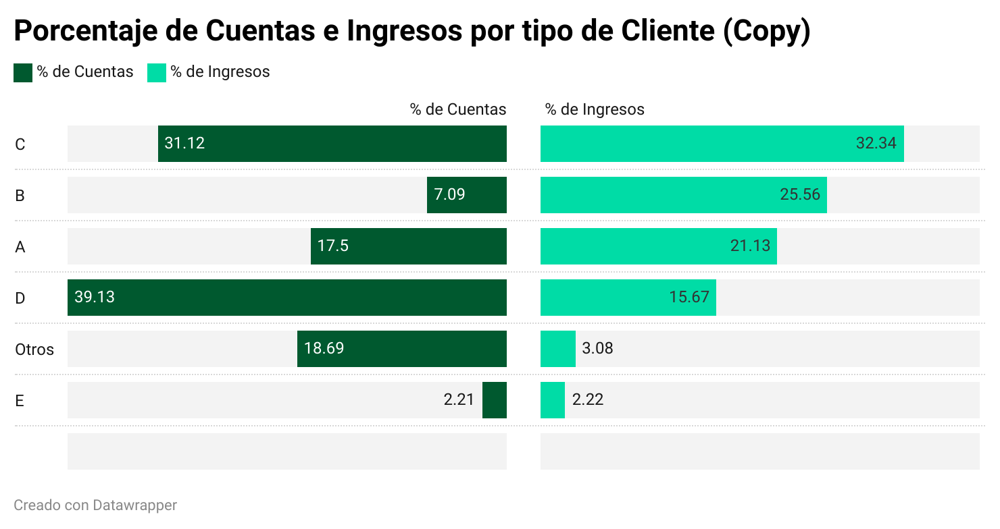

Los clientes con más cuentas, no necesariamente tienen el mayor capital: Descifrando el Flujo de Capital en Banco Micro
Escrito por Oscar
En el mundo de la banca, existe una creencia común de que los clientes con
múltiples cuentas bancarias poseen el mayor capital. Sin embargo,
esta suposición a menudo no refleja la verdadera naturaleza del
flujo de capital en las cuentas de los clientes. Banco Micro,
en su constante búsqueda de comprender mejor las dinámicas
financieras de sus clientes, ha identificado que la cantidad
de cuentas no siempre se correlaciona directamente con el capital
real de los individuos. Detrás de este fenómeno
yace la importancia de analizar el flujo de capital de manera más profunda.
El flujo de capital es una herramienta esencial para entender cómo los fondos
se mueven dentro y fuera de las cuentas de los clientes. Aunque un cliente
pueda tener varias cuentas en su nombre, el flujo de capital en estas cuentas
puede variar significativamente. Esto se debe a varios factores que deben ser
considerados al evaluar el verdadero poder adquisitivo de un individuo.

Una de las razones principales detrás de esta desconexión entre la cantidad de cuentas y el capital real es la diversificación financiera. Los clientes pueden tener diferentes cuentas para diferentes propósitos, como ahorros, inversiones, gastos diarios y emergencias. Por ejemplo, un cliente puede tener una cuenta de ahorros donde acumula fondos de manera constante, una cuenta de inversión para hacer crecer su capital y una cuenta corriente para administrar sus gastos mensuales. Cada una de estas cuentas puede mostrar flujos de capital muy distintos, lo que no necesariamente refleja la totalidad de su capital acumulado.
Además, las transacciones comerciales y los movimientos de capital también pueden distorsionar la percepción de la riqueza de un individuo. Un cliente que posea un negocio puede tener un flujo constante de fondos ingresando y saliendo de sus cuentas debido a las operaciones comerciales. Aunque estos flujos pueden ser significativos, no necesariamente indican que el cliente tenga un capital sustancial disponible en un momento dado.
La inversión también desempeña un papel fundamental en la aparente discrepancia entre la cantidad de cuentas y el capital real. Un cliente puede tener cuentas dedicadas a inversiones en activos financieros, como acciones, bonos o fondos mutuos. Estas cuentas pueden experimentar fluctuaciones considerables en sus flujos de capital debido a las condiciones del mercado. Aunque en un momento determinado estas cuentas puedan mostrar saldos elevados, estos pueden disminuir rápidamente debido a la volatilidad del mercado.
Banco Micro reconoce la importancia de considerar el flujo de capital en su conjunto, en lugar de basarse únicamente en el número de cuentas que un cliente posee. Esta comprensión más matizada permite a la institución financiera ofrecer asesoramiento más preciso y personalizado a sus clientes, ayudándolos a tomar decisiones informadas sobre sus finanzas.
En conclusión, la afirmación de que los clientes con más cuentas siempre tienen el mayor capital es una simplificación excesiva de la realidad financiera. El flujo de capital es un aspecto crítico para entender la verdadera situación financiera de los individuos, ya que la cantidad de cuentas no necesariamente refleja la magnitud de su capital. Banco Micro está comprometido en brindar una visión más precisa y completa de las finanzas de sus clientes, reconociendo que el flujo de capital es la clave para una comprensión más profunda de la riqueza real.